Sessions pile up: triaging Claude Code across repos
The pile
If you run Claude Code seriously, across multiple repos, with parallel sessions for different tasks, you've watched the session pile grow. Within a week, dozens of .jsonl files have accumulated under ~/.claude*/projects/<encoded-path>/, one per session, scattered across as many directories as you have repos. Some of them are gold (the one that fixed the production bug, the migration discussion, the architecture call you want to revisit). Most are noise.
Native Claude Code's --resume flag is single-repo and recency-ordered. Two repos and a few days in, you've outgrown it. There's no cross-repo view, no search, no tagging, no priority, no way to mark "this one matters, save it; that one can go." The pile just gets bigger.
The activity this needs isn't "list sessions." It's triage: rapid scanning, quick judgment, occasional rescue. The way you'd handle a busy email inbox. Most messages are noise, a few are gold, a tiny number need follow-up. Sessions are the same.
textsessions is a TUI for that workflow. It indexes every Claude Code session on your machine across every repo, gives you a dense Textual view to browse, filter, search, tag, prioritize, pin, archive, and resume. The reason it's a TUI and not a CLI is that triage doesn't fit on a flag. You need eyes, scrolling, and shortcut keys.

Why I built it
I started running parallel Claude agents at work, one terminal per task, several at once, across drastically different domains. Sometimes the same repo with different scopes. Sometimes different repos for unrelated work. Within a week the pile was unmanageable.
The breaking moment was familiar. I remembered solving a tricky problem in a session a few days earlier and wanted to come back to it. I couldn't find it. --resume showed me the most recent runs in the current repo. The session I needed was in a different repo, four days back. I knew it existed; I knew roughly what was in it; I had no way to reach it.
That's when I realized the act of running many agents creates a new kind of work: triage. Native Claude has no triage primitives. The session list is flat, single-repo, and sorted only by recency. There's no tagging, no priority, no search inside session content, no way to say "this one matters, keep it" vs "this one was a dead end, prune it." The activity that the tool needed didn't yet have a tool.
textsessions ships the primitives. It reads the JSONL trail Claude already writes, builds a per-repo YAML index, and surfaces a dense list with metadata you can edit: short display name, description, comma-separated tags, priority (urgent / 1 / 2 / 3), pin state. It doesn't fight Claude Code. It just makes Claude's existing trail navigable.
One feature worth calling out: ghosts and orphans. Sessions whose source .jsonl files have moved or been deleted (because you renamed a repo, or moved your project tree, or Claude Code regenerated something) become "ghosts" in the index. textsessions surfaces them in a dedicated view (g), so you can either recover the metadata onto a fresh session or hard-delete the stale entry. This kind of thing ("the underlying file moved and now I have an index entry pointing at nothing") is exactly the noise that breaks every session-management tool that doesn't think about it.
How to use it in five minutes
Install:
pip install git+https://github.com/paperworlds/textsessions
# or with uv:
uv tool install git+https://github.com/paperworlds/textsessionsFor multi-account integration with textaccounts (so each session shows which profile it came from):
uv tool install "git+https://github.com/paperworlds/textsessions[accounts]"First-run discovery. Let textsessions find your existing Claude session directories:
textsessions initIt scans for repos under ~/.claude*/projects/ and registers them. Then build the index:
textsessions reindexThis walks every .jsonl file in the registered locations and writes a YAML index per repo. It's fast (milliseconds on hundreds of sessions), so you can run it whenever you sit down at the keyboard.
Open the TUI:
textsessions viewYou see a dense list across every registered repo: name, repo, profile (if textaccounts is integrated), tags, priority, last-active timestamp.
Useful shortcuts in the TUI:
| Key | Action |
|---|---|
Enter | Resume session (TUI suspends, Claude launches, returns when you exit) |
n | Start a new session (with profile, repo, optional name) |
/ | Filter by name, description, or slug |
a | Toggle: current repo only ↔ all repos |
t | Tag / untag (comma-separated; prefix - to remove) |
p | Set priority (urgent / 1 / 2 / 3) |
x | Pin / unpin |
r | Rename (short display name + description) |
g | Ghosts & orphans view (sessions whose .jsonl is gone) |
d | Archive (recoverable) |
D | Hard delete (confirmation required) |
? | Full keymap |
For semantic search across session content (different from the simple filter on /), there's an ai-search CLI that ranks sessions by relevance to a query, useful for "find the session where I figured out the migration." That one sends content to Claude, so use it when the simple filter isn't enough rather than as the default.

ai-search: semantic ranking when a name filter isn't enough.One workflow that makes the pile sustainable: reindex plus a minute of triage every few days. Tag the gold ones, archive the dead ends, pin the in-progress ones. That's it. The pile stays navigable.
Pairs with textaccounts
If you've already adopted textaccounts (the previous post in this series, the tool that gives Claude Code real profile isolation), textsessions picks up your profiles automatically. Each session shows which profile it belongs to in a dedicated column, and the same row tells you whether it's a work session, a personal session, or a worker profile spawned for a parallel run. Triage stays scoped: filter to one profile, archive across another, never accidentally resume a personal session in a work context.
That's why I install them together. textaccounts isolates the configuration so two contexts don't bleed into each other. textsessions makes the resulting two piles navigable. Different layers, same pain.
The bigger picture
textsessions is one of several tools in Paperworlds, small open-source fixes for missing primitives I kept hitting in Claude Code while running it daily. The other tools tackle different layers of the same problem; this one is about making the trail Claude leaves on disk navigable, after the fact.
If your ~/.claude*/projects/ directory has more than a handful of sessions and you've felt the friction of finding the right one, give it a try. Issues, PRs, and "I want this for bash" requests welcome.